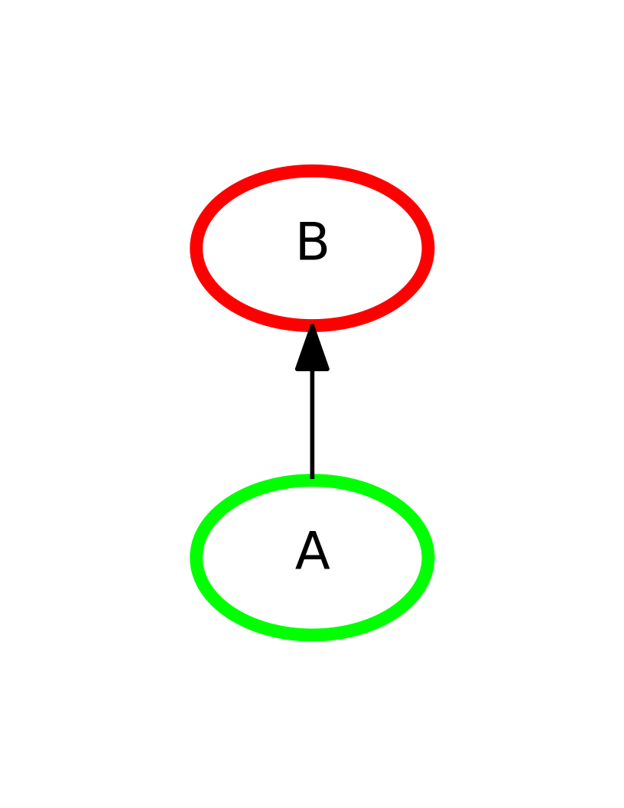

Composition¶
Overview¶
Composition is the base class for objects that combine PsyNeuLink Components into an executable model. It defines a common set of attributes possessed, and methods used by all Composition objects.
Composition “Nodes” are Mechanisms and/or nested Compositions. Projections connect two Nodes. The Composition’s graph stores the structural relationships
among the Nodes of a Composition and the Projections that connect them.
The Composition’s scheduler generates an execution queue based on these structural dependencies, allowing for other user-specified scheduling and termination conditions to be mixed in.
Creating a Composition¶
A generic Composition can be created by calling the constructor, and then adding Components using the following Composition methods:
add_node- Adds a node to the Composition
add_nodes- Adds mutiple nodes to the Composition
add_projection- Connects two nodes in the Composition via a Projection
add_linear_processing_pathway- Adds and connects a list of nodes and/or Projections to the Composition; Inserts a default Projection between any adjacent Nodes
Note
Only Nodes and Projections added to a Composition via the four methods above constitute a Composition, even if other Nodes and/or Projections are constructed in the same script.
In the following script comp_0, comp_1 and comp_2 are identical, but constructed using different methods.
Create Mechanisms:
>>> import psyneulink as pnl >>> A = pnl.ProcessingMechanism(name='A') >>> B = pnl.ProcessingMechanism(name='B') >>> C = pnl.ProcessingMechanism(name='C')Create Projections:
>>> A_to_B = pnl.MappingProjection(name="A-to-B") >>> B_to_C = pnl.MappingProjection(name="B-to-C")Create Composition; Add Nodes (Mechanisms) and Projections via the add_linear_processing_pathway method:
>>> comp_0 = pnl.Composition(name='comp-0') >>> comp_0.add_linear_processing_pathway(pathway=[A, A_to_B, B, B_to_C, C])Create Composition; Add Nodes (Mechanisms) and Projections via the add_nodes and add_projection methods:
>>> comp_1 = pnl.Composition(name='comp-1') >>> comp_1.add_nodes(nodes=[A, B, C]) >>> comp_1.add_projection(projection=A_to_B) >>> comp_1.add_projection(projection=B_to_C)Create Composition; Add Nodes (Mechanisms) and Projections via the add_node and add_projection methods:
>>> comp_2 = pnl.Composition(name='comp-2') >>> comp_2.add_node(node=A) >>> comp_2.add_node(node=B) >>> comp_2.add_node(node=C) >>> comp_2.add_projection(projection=A_to_B) >>> comp_2.add_projection(projection=B_to_C)Run each Composition:
>>> input_dict = {A: [[[1.0]]]} >>> comp_0_output = comp_0.run(inputs=input_dict) >>> comp_1_output = comp_1.run(inputs=input_dict) >>> comp_2_output = comp_2.run(inputs=input_dict)
Running a Composition¶
Inputs¶
The run method presents the inputs for each TRIAL to the input_states of the INPUT Nodes in
the scope of execution. These input values are specified in the inputs argument of a
Composition’s execute or run method.
The standard way to specificy inputs is a Python dictionary in which each key is an INPUT Node and each value is a
list. The lists represent the inputs to the key INPUT Nodes, such that the i-th element of the list represents the
input value to the key Node on trial i.

Each input value must be compatible with the shape of the key INPUT Node’s external_input_values. As a result, each item in the list of inputs is typically a 2d list/array,
though some shorthand notations are allowed.
>>> import psyneulink as pnl
>>> a = pnl.TransferMechanism(name='a',
... default_variable=[[0.0, 0.0]])
>>> b = pnl.TransferMechanism(name='b',
... default_variable=[[0.0], [0.0]])
>>> c = pnl.TransferMechanism(name='c')
>>> pathway1 = [a, c]
>>> pathway2 = [b, c]
>>> comp = Composition(name='comp')
>>> comp.add_linear_processing_pathway(pathway1)
>>> comp.add_linear_processing_pathway(pathway2)
>>> input_dictionary = {a: [[[1.0, 1.0]], [[1.0, 1.0]]],
... b: [[[2.0], [3.0]], [[2.0], [3.0]]]}
>>> comp.run(inputs=input_dictionary)
Note
A Node’s external_input_values attribute is always a 2d list in which the
index i element is the value of the Node’s index i external_input_state. In
many cases, external_input_values is the same as variable. Keep in mind that any InputStates marked as “internal” are excluded from
external_input_values, and do not receive user-specified input values.
If num_trials is not in use, the number of inputs provided determines the number of trials in the run. For example, if five inputs are provided for each INPUT Node, and num_trials is not specified, the Composition executes five times.
| Trial # | 0 | 1 | 2 | 3 | 4 |
| Input to Mechanism a | 1.0 | 2.0 | 3.0 | 4.0 | 5.0 |
>>> import psyneulink as pnl
>>> a = pnl.TransferMechanism(name='a')
>>> b = pnl.TransferMechanism(name='b')
>>> pathway1 = [a, b]
>>> comp = Composition(name='comp')
>>> comp.add_linear_processing_pathway(pathway1)
>>> input_dictionary = {a: [[[1.0]], [[2.0]], [[3.0]], [[4.0]], [[5.0]]]}
>>> comp.run(inputs=input_dictionary)
The number of inputs specified must be the same for all Nodes in the input dictionary (except for any Nodes for which only one input is specified). In other words, all of the values in the input dictionary must have the same length as each other (or length 1).
If num_trials is in use, run iterates over the inputs until num_trials is reached. For example, if five inputs
are provided for each INPUT Node, and num_trials = 7, the system executes seven times. The input values from trials 0
and 1 are used again on trials 5 and 6, respectively.
| Trial # | 0 | 1 | 2 | 3 | 4 | 5 | 6 |
| Input to Mechanism a | 1.0 | 2.0 | 3.0 | 4.0 | 5.0 | 1.0 | 2.0 |
>>> import psyneulink as pnl
>>> a = pnl.TransferMechanism(name='a')
>>> b = pnl.TransferMechanism(name='b')
>>> pathway1 = [a, b]
>>> comp = Composition(name='comp')
>>> comp.add_linear_processing_pathway(pathway1)
>>> input_dictionary = {a: [[[1.0]], [[2.0]], [[3.0]], [[4.0]], [[5.0]]]}
>>> comp.run(inputs=input_dictionary,
... num_trials=7)
For convenience, condensed versions of the input specification described above are also accepted in the following situations:
- Case 1: INPUT Node has only one input state
| Trial # | 0 | 1 | 2 | 3 | 4 |
| Input to Mechanism a | 1.0 | 2.0 | 3.0 | 4.0 | 5.0 |
Complete input specification:
>>> import psyneulink as pnl
>>> a = pnl.TransferMechanism(name='a')
>>> b = pnl.TransferMechanism(name='b')
>>> pathway1 = [a, b]
>>> comp = Composition(name='comp')
>>> comp.add_linear_processing_pathway(pathway1)
>>> input_dictionary = {a: [[[1.0]], [[2.0]], [[3.0]], [[4.0]], [[5.0]]]}
>>> comp.run(inputs=input_dictionary)
Shorthand - drop the outer list on each input because Mechanism a only has one input state:
>>> input_dictionary = {a: [[1.0], [2.0], [3.0], [4.0], [5.0]]}
>>> comp.run(inputs=input_dictionary)
Shorthand - drop the remaining list on each input because Mechanism a’s one input state’s value is length 1:
>>> input_dictionary = {a: [1.0, 2.0, 3.0, 4.0, 5.0]}
>>> comp.run(inputs=input_dictionary)
- Case 2: Only one input is provided for the INPUT Node
| Trial # | 0 |
| Input to Mechanism a | [[1.0], [2.0]] |
Complete input specification:
>>> import psyneulink as pnl
>>> a = pnl.TransferMechanism(name='a',
default_variable=[[0.0], [0.0]])
>>> b = pnl.TransferMechanism(name='b')
>>> pathway1 = [a, b]
>>> comp = Composition(name='comp')
>>> comp.add_linear_processing_pathway(pathway1)
>>> input_dictionary = {a: [[[1.0], [2.0]]]}
>>> comp.run(inputs=input_dictionary)
Shorthand - drop the outer list on Mechanism a’s input specification because there is only one trial:
>>> input_dictionary = {a: [[1.0], [2.0]]}
>>> comp.run(inputs=input_dictionary)
- Case 3: The same input is used on all trials
| Trial # | 0 | 1 | 2 | 3 | 4 |
| Input to Mechanism a | [[1.0], [2.0]] | [[1.0], [2.0]] | [[1.0], [2.0]] | [[1.0], [2.0]] | [[1.0], [2.0]] |
Complete input specification:
>>> import psyneulink as pnl
>>> a = pnl.TransferMechanism(name='a',
... default_variable=[[0.0], [0.0]])
>>> b = pnl.TransferMechanism(name='b')
>>> pathway1 = [a, b]
>>> comp = Composition(name='comp')
>>> comp.add_linear_processing_pathway(pathway1)
>>> input_dictionary = {a: [[[1.0], [2.0]], [[1.0], [2.0]], [[1.0], [2.0]], [[1.0], [2.0]], [[1.0], [2.0]]]}
>>> comp.run(inputs=input_dictionary)
Shorthand - drop the outer list on Mechanism a’s input specification and use num_trials to repeat the input value
>>> input_dictionary = {a: [[1.0], [2.0]]}
>>> comp.run(inputs=input_dictionary,
... num_trials=5)
- Case 4: There is only one INPUT Node
| Trial # | 0 | 1 |
| Input to Mechanism a | [1.0, 2.0, 3.0] | [1.0, 2.0, 3.0] |
Complete input specification:
>>> import psyneulink as pnl
>>> a = pnl.TransferMechanism(name='a',
... default_variable=[[1.0, 2.0, 3.0]])
>>> b = pnl.TransferMechanism(name='b')
>>> pathway1 = [a, b]
>>> comp = Composition(name='comp')
>>> comp.add_linear_processing_pathway(pathway1)
>>> input_dictionary = input_dictionary = {a: [[1.0, 2.0, 3.0], [1.0, 2.0, 3.0]]}
>>> comp.run(inputs=input_dictionary)
Shorthand - specify Mechanism a’s inputs in a list because it is the only INPUT Node
>>> input_list = [[1.0, 2.0, 3.0], [1.0, 2.0, 3.0]]
>>> comp.run(inputs=input_list)
Interactive Inputs¶
An alternative way to specify inputs is with a function. The function must return a dictionary that satisfies the rules above for standard input specification. The only difference is that on each execution, the function returns the input values for each INPUT Node for a single trial.
Execution Contexts¶
An execution context is a scope of execution which has its own set of values for Components and their parameters.
This is designed to prevent computations from interfering with each other, when Components are reused, which often occurs
when using multiple or nested Compositions, or running simulations. Each execution context is
or is associated with an execution_id, which is often a user-readable string. An execution_id can be specified in a call to Composition.run,
or left unspecified, in which case the Composition’s default execution_id would be used. When
looking for values after a run, it’s important to know the execution context you are interested in, as shown below
>>> import psyneulink as pnl
>>> c = pnl.Composition()
>>> d = pnl.Composition()
>>> t = pnl.TransferMechanism()
>>> c.add_node(t)
>>> d.add_node(t)
>>> t.execute(1)
array([[1.]])
>>> c.run({t: 5})
[[array([5.])]]
>>> d.run({t: 10})
[[array([10.])]]
>>> c.run({t: 20}, execution_id='custom execution id')
[[array([20.])]]
# context None
>>> print(t.parameters.value.get())
[[1.]]
>>> print(t.parameters.value.get(c))
[[5.]]
>>> print(t.parameters.value.get(d))
[[10.]]
>>> print(t.parameters.value.get('custom execution id'))
[[20.]]
In general, anything that happens outside of a Composition run and without an explicit setting of execution context
occurs in the None execution context.
For Developers¶
- The parameter values for any execution context can be copied into another execution context by using Component._initialize_from_context, which when called on a Component copies the values for all its parameters and recursively for all of the Component’s
_dependent_components _dependent_componentsshould be added to for any new Component that requires other Components to function properly (beyond “standard” things like Component.function, or Mechanism.input_states, as these are added in the proper classes’ _dependent_components)- the intent is that with
_dependent_componentsset properly, callingobj._initialize_from_context(new_execution_id, base_execution_id)should be sufficient to run obj under new_execution_id - a good example of a “nonstandard” override is
OptimizationControlMechanism._dependent_components
- the intent is that with
If you receive an error like below, while checking for a context value for example,
self.parameters.context.get(execution_id).execution_phase == ContextStatus.PROCESSING
AttributeError: 'NoneType' object has no attribute 'execution_phase'
this means that there was no context value found for execution_id, and can be indicative that execution_id was not initialized to the values of another execution context, which normally happens during execution. See Execution Contexts initialization.
Timing¶
When run is called by a Composition, it calls that Composition’s execute method once for each
input (or set of inputs) specified in the call to run, which constitutes a TRIAL of
execution. For each TRIAL, the Component makes repeated calls to its Scheduler,
executing the Components it specifies in each TIME_STEP, until every Component has been executed at least once or
another termination condition is met. The Scheduler can be used in combination
with Condition specifications for individual Components to execute different Components at different time scales.
Runtime Params
Visualizing a Composition¶
The show_graph method generates a display of the graph structure of Nodes (Mechanisms and
Nested Compositions) and Projections in the Composition (based on the Composition's processing graph).
By default, Nodes are shown as ovals labeled by their names, and Projections are shown
as unlabeled arrows.
>>> import psyneulink as pnl
>>> A = pnl.ProcessingMechanism(name='A')
>>> B = pnl.ProcessingMechanism(name='B')
>>> comp = pnl.Composition(name='comp')
>>> comp.add_linear_processing_pathway([A,B])
>>> comp.show_graph()
|

|
However, there are options for displaying more detailed information:
show_node_structure
show_projection_labels
show_nested
If two Compositions identical to comp above are added as the nodes of the linear processing pathway of a third comp :


Class Reference¶
-
class
psyneulink.core.compositions.composition.Composition(name=None, model_based_optimizer=None, enable_model_based_optimizer=None, **param_defaults)¶ Parameters: - name (str) –
- model_based_optimzer (
OptimizationControlmechanism) – must be specified if the OptimizationControlMechanism runs simulations of its own Composition - enable_model_based_optimizer (bool) – When set to True, executes the model_based_optimizer after each trial. When False, ignores the model_based_optimizer
-
graph¶ Graph– The fullGraphassociated with this Composition. Contains both Nodes (Mechanisms or Compositions) and Projections
-
nodes¶ list[Mechanisms and Compositions]– A list of all Nodes (Mechanisms and/or Compositions) contained in this Composition
-
input_CIM¶ CompositionInterfaceMechanism– Aggregates input values for the INPUT nodes of the Composition. If the Composition is nested, then the input_CIM and its InputStates serve as proxies for the Composition itself in terms of afferent projections.
-
output_CIM¶ CompositionInterfaceMechanism– Aggregates output values from the OUTPUT nodes of the Composition. If the Composition is nested, then the output_CIM and its OutputStates serve as proxies for the Composition itself in terms of efferent projections.
-
input_CIM_states¶ dict – A dictionary in which keys are InputStates of INPUT Nodes in a composition, and values are lists containing two items: the corresponding InputState and OutputState on the input_CIM.
-
output_CIM_states¶ dict – A dictionary in which keys are OutputStates of OUTPUT Nodes in a composition, and values are lists containing two items: the corresponding InputState and OutputState on the input_CIM.
-
env¶ Gym Forager Environment : default: None – Stores a Gym Forager Environment so that the Composition may interact with this environment within a single call to
run.
-
shadows¶ dict – A dictionary in which the keys are all in the Composition and the values are lists of any Nodes that shadow the original Node’s input.
-
enable_model_based_optimizer¶ bool – When True, executes the Composition’s
model_based_optimizerat the end of each Trial.
-
model_based_optimizer¶ OptimizationControlMechanism – If the Composition contains an OptimizationControlMechanism that runs simulations of its own Composition, then the OCM is stored here.
-
default_execution_id¶ if no execution_id is specified in a call to run, this execution_id is used.
Default value: the Composition’s name
-
execution_ids¶ set – Stores all execution_ids used by this Composition.
-
graph_processing¶ The Composition’s processing graph (contains only Mechanisms.
Getter: Returns the processing graph, and builds the graph if it needs updating since the last access.
-
scheduler_processing¶ A default Scheduler automatically generated by the Composition, used for the (processing phase of execution.
Getter: Returns the default processing scheduler, and builds it if it needs updating since the last access.
-
scheduler_learning¶ A default Scheduler automatically generated by the Composition, used for the learning phase of execution.
Getter: Returns the default learning scheduler, and builds it if it needs updating since the last access.
-
add_node(node, required_roles=None)¶ Adds a Composition Node (Mechanisms or Composition) to the Composition, if it is not already added
Parameters: - node (Mechanisms or Composition) – the node to be added to the Composition
- required_roles (psyneulink.core.globals.utilities.NodeRole or list of NodeRoles) – any NodeRoles roles that this node should have in addition to those determined by analyze graph.
-
add_model_based_optimizer(optimizer)¶ Adds an OptimizationControlMechanism as the
model_based_optimizerof the Composition, which gives the OCM access to the Composition’sevaluatemethod. This allows the OCM to use simulations to determine an optimal Control policy.
-
add_projection(projection=None, sender=None, receiver=None, feedback=False, name=None)¶ Adds a projection to the Composition, if it is not already added.
If a projection is not specified, then a default MappingProjection is created.
The sender and receiver of a particular Projection vertex within the Composition (the sender and receiver arguments of add_projection) must match the
senderandreceiverspecified on the Projection object itself.- If the sender and/or receiver arguments are not specified, then the
senderand/orreceiverattributes of the Projection object set the missing value(s). - If the
senderand/orreceiverattributes of the Projection object are not specified, then the sender and/or receiver arguments set the missing value(s).
Parameters: - sender (Mechanism, Composition, or OutputState) – the sender of projection
- projection (Projection, matrix) – the projection to add
- receiver (Mechanism, Composition, or InputState) – the receiver of projection
- feedback (Boolean) –
When False (default) all Nodes within a cycle containing this Projection execute in parallel. This means that each Projections within the cycle actually passes to its receiver its sender’s value from the sender’s previous execution.
When True, this Projection “breaks” the cycle, such that all Nodes execute in sequence, and only the Projection marked as ‘feedback’ passes to its receiver its sender’s value from the sender’s previous execution.
- If the sender and/or receiver arguments are not specified, then the
-
add_pathway(path)¶ Adds an existing Pathway to the current Composition
Parameters: path (the Pathway (Composition) to be added) –
-
get_nodes_by_role(role)¶ Returns a List of Composition Nodes in this Composition that have the role specified
Parameters: role (NodeRole) – the List of nodes having this role to return Returns: - List of Composition Nodes with `NodeRole` *role* (List(Mechanisms and)
- Compositions)
-
show_structure(show_functions=False, show_values=False, use_labels=False, show_headers=False, show_role=False, system=None, composition=None, output_fmt='pdf')¶ Generate a detailed display of a the structure of a Mechanism.
Note
This method relies on graphviz, which must be installed and imported (standard with PsyNeuLink pip install)
Displays the structure of a Mechanism using the GraphViz record shape. This method is called by
System.show_graphif its show_mechanism_structure argument is specified asTruewhen it is called.Parameters: - show_functions (bool : default False) – specifies whether or not to show the
functionof the Mechanism and each of its States in the record (enclosed in parentheses). - show_values (bool : default False) – specifies whether or not to show the
valueof the Mechanism and each of its States in the record (prefixed by “=”). - use_labels (bool : default False) – specifies whether or not to use labels for values if show_values is
True; labels must be specified in theinput_labels_dict(for InputState values) andoutput_labels_dict(for OutputState values), otherwise the value is used. - show_headers (bool : default False) – specifies whether or not to show the Mechanism, InputState, ParameterState and OutputState headers (shown in caps).
- show_role (boofl : default False) – specifies whether or not to show the role of the Mechanism in the System specified in the system argument (shown in caps and enclosed in square brackets); if system is not specified, show_roles is ignored.
- system (System : default None) – specifies the System (to which the Mechanism must belong) for which to show its role (see roles); if this is not specified, the show_role argument is ignored.
- output_fmt (keyword : default 'pdf') –
‘pdf’: generate and open a pdf with the visualization;
’jupyter’: return the object (ideal for working in jupyter/ipython notebooks)
’struct’: return a string that specifies the structure of the record shape, for use in a GraphViz node specification.
- show_functions (bool : default False) – specifies whether or not to show the
-
show_graph(show_model_based_optimizer=False, show_dimensions=False, show_node_structure=False, show_headers=False, show_projection_labels=False, show_nested=False, direction='BT', active_items=None, active_color='bold', input_color='green', output_color='red', input_and_output_color='brown', model_based_optimizer_color='blue', output_fmt='pdf', execution_id=NotImplemented)¶ Note
This method relies on graphviz, which must be installed and imported (standard with PsyNeuLink pip install)
See Visualizing a Composition for details and examples.
Parameters: - show_node_structure (bool, VALUES, FUNCTIONS or ALL : default False) –
specifies whether or not to show a detailed representation of each Mechanisms in the graph, including its
States; can have the following settings:True– shows States of Mechanism, but not information about thevalueorfunctionof the Mechanism or its States.- VALUES – shows the
valueof the Mechanism and thevalueof each of its States. - LABELS – shows the
valueof the Mechanism and thevalueof each of its States, using any labels for the values of InputStates and OutputStates specified in the Mechanism’sinput_labels_dictandoutput_labels_dict, respectively. - FUNCTIONS – shows the
functionof the Mechanism and thefunctionof its InputStates and OutputStates. - ROLES – shows the role of the Mechanism in the System in square brackets (but not any of the other information; use ALL to show ROLES with other information).
- ALL – shows both
valueandfunctionof the Mechanism and its States (using labels for the values, if specified; see above).
Any combination of the settings above can also be specified in a list that is assigned to show_node_structure
- show_projection_labels (bool : default False) – specifies whether or not to show names of projections.
- show_nested (bool : default False) – specifies whether nested Compositions are shown in details as inset graphs
- show_model_based_optimizer (bool : default False) – specifies whether or not to show the controller components of the system; they will all be displayed in the color specified for model_based_optimizer_color.
- direction (keyword : default 'BT') – ‘BT’: bottom to top; ‘TB’: top to bottom; ‘LR’: left to right; and ‘RL`: right to left.
- active_items (List[Component] : default None) – specifies one or more items in the graph to display in the color specified by active_color*.
- active_color (keyword : default 'yellow') – specifies how to highlight the item(s) specified in active_items*: either a color recognized by GraphViz, or the keyword BOLD.
- input_color (keyword : default 'green',) – specifies the display color for
INPUTNodes in the Composition - output_color (keyword : default 'red',) – specifies the display color for
OUTPUTNodes in the Composition - input_and_output_color (keyword : default 'brown') – specifies the display color of Nodes that are both an
INPUTand anOUTPUTNode in the Composition - model_based_optimizer_color (keyword : default
blue) – specifies the color in which the model_based_optimizer components are displayed - output_fmt (keyword : default 'pdf') – ‘pdf’: generate and open a pdf with the visualization; ‘jupyter’: return the object (ideal for working in jupyter/ipython notebooks).
Returns: display of system – ‘pdf’ (placed in current directory) if
output_fmtarg is ‘pdf’; Graphviz graph object ifoutput_fmtarg is ‘jupyter’.Return type: pdfor Graphviz graph object- show_node_structure (bool, VALUES, FUNCTIONS or ALL : default False) –
-
execute(inputs=None, autodiff_stimuli=None, scheduler_processing=None, scheduler_learning=None, termination_processing=None, termination_learning=None, call_before_time_step=None, call_before_pass=None, call_after_time_step=None, call_after_pass=None, execution_id=None, base_execution_id=None, clamp_input='soft_clamp', targets=None, runtime_params=None, bin_execute=False, context=None)¶ Passes inputs to any Nodes receiving inputs directly from the user (via the “inputs” argument) then coordinates with the Scheduler to execute sets of nodes that are eligible to execute until termination conditions are met.
Parameters: - inputs ({ Mechanism or Composition : list }) – a dictionary containing a key-value pair for each node in the composition that receives inputs from the user. For each pair, the key is the node (Mechanism or Composition) and the value is an input, the shape of which must match the node’s default variable.
- scheduler_processing (Scheduler) – the scheduler object that owns the conditions that will instruct the non-learning execution of this Composition. If not specified, the Composition will use its automatically generated scheduler
- scheduler_learning (Scheduler) – the scheduler object that owns the conditions that will instruct the Learning execution of this Composition. If not specified, the Composition will use its automatically generated scheduler
- execution_id – execution_id will be set to self.default_execution_id if unspecified
- base_execution_id – the execution_id corresponding to the execution context from which this execution will be initialized, if values currently do not exist for execution_id
- call_before_time_step (callable) – called before each
TIME_STEPis executed passed the current execution_id (but it is not necessary for your callable to take) - call_after_time_step (callable) – called after each
TIME_STEPis executed passed the current execution_id (but it is not necessary for your callable to take) - call_before_pass (callable) – called before each
PASSis executed passed the current execution_id (but it is not necessary for your callable to take) - call_after_pass (callable) – called after each
PASSis executed passed the current execution_id (but it is not necessary for your callable to take)
Returns: output value of the final Mechanism executed in the Composition
Return type: various
-
run(inputs=None, scheduler_processing=None, scheduler_learning=None, termination_processing=None, termination_learning=None, execution_id=None, base_execution_id=None, num_trials=None, call_before_time_step=None, call_after_time_step=None, call_before_pass=None, call_after_pass=None, call_before_trial=None, call_after_trial=None, clamp_input='soft_clamp', targets=None, bin_execute=False, initial_values=None, reinitialize_values=None, runtime_params=None, context=None)¶ Passes inputs to compositions, then executes to receive and execute sets of nodes that are eligible to run until termination conditions are met.
Parameters: - inputs ({ Mechanism : list } or { Composition : list }) – a dictionary containing a key-value pair for each Node in the composition that receives inputs from
the user. For each pair, the key is the Node and the value is a list of inputs. Each input in the
list corresponds to a certain
TRIAL. - scheduler_processing (Scheduler) – the scheduler object that owns the conditions that will instruct the non-learning execution of this Composition. If not specified, the Composition will use its automatically generated scheduler.
- scheduler_learning (Scheduler) – the scheduler object that owns the conditions that will instruct the Learning execution of this Composition. If not specified, the Composition will use its automatically generated scheduler.
- execution_id – execution_id will be set to self.default_execution_id if unspecified
- base_execution_id – the execution_id corresponding to the execution context from which this execution will be initialized, if values currently do not exist for execution_id
- num_trials (int) – typically, the composition will infer the number of trials from the length of its input specification. To reuse the same inputs across many trials, you may specify an input dictionary with lists of length 1, or use default inputs, and select a number of trials with num_trials.
- call_before_time_step (callable) – will be called before each
TIME_STEPis executed. - call_after_time_step (callable) – will be called after each
TIME_STEPis executed. - call_before_pass (callable) – will be called before each
PASSis executed. - call_after_pass (callable) – will be called after each
PASSis executed. - call_before_trial (callable) – will be called before each
TRIALis executed. - call_after_trial (callable) – will be called after each
TRIALis executed. - initial_values (Dict[Node: Node Value]) – sets the values of nodes before the start of the run. This is useful in cases where a node’s value is used before that node executes for the first time (usually due to recurrence or control).
- runtime_params (Dict[Node: Dict[Parameter: Tuple(Value, Condition)]]) –
nested dictionary of (value, Condition) tuples for parameters of Nodes (Mechanisms or Compositions of the Composition; specifies alternate parameter values to be used only during this Run when the specified Condition is met.
- Outer dictionary:
- key - Node
- value - Runtime Parameter Specification Dictionary
- Runtime Parameter Specification Dictionary:
- key - keyword corresponding to a parameter of the Node
- value - tuple in which the index 0 item is the runtime parameter value, and the index 1 item is a Condition
See Runtime Parameters for more details and examples of valid dictionaries.
Returns: output value of the final Node executed in the composition
Return type: various
- inputs ({ Mechanism : list } or { Composition : list }) – a dictionary containing a key-value pair for each Node in the composition that receives inputs from
the user. For each pair, the key is the Node and the value is a list of inputs. Each input in the
list corresponds to a certain
-
evaluate(predicted_input=None, control_allocation=None, num_trials=1, runtime_params=None, base_execution_id=None, execution_id=None, context=None)¶ Runs a simulation of the Composition, with the specified control_allocation, excluding its
model_based_optimizerin order to return thenet_outcomeof the Composition, according to itsmodel_based_optimizerunder that control_allocation. All values are reset to pre-simulation values at the end of the simulation.
-
input_states¶ Returns all InputStates that belong to the Input CompositionInterfaceMechanism
-
output_states¶ Returns all OutputStates that belong to the Output CompositionInterfaceMechanism
-
output_values¶ Returns values of all OutputStates that belong to the Output CompositionInterfaceMechanism
-
input_state¶ Returns the index 0 InputState that belongs to the Input CompositionInterfaceMechanism
-
input_values¶ Returns values of all InputStates that belong to the Input CompositionInterfaceMechanism
-
external_input_states¶ Returns all external InputStates that belong to the Input CompositionInterfaceMechanism
-
external_input_values¶ Returns values of all external InputStates that belong to the Input CompositionInterfaceMechanism
-
default_external_input_values¶ Returns the default values of all external InputStates that belong to the Input CompositionInterfaceMechanism
-
stateful_nodes¶ List of all nodes in the system that are currently marked as stateful. For Mechanisms, statefulness is determined by checking whether node.has_initializers is True. For Compositions, statefulness is determined by checking whether any of its nodes are stateful.
Returns: all stateful nodes in the system Return type: List[Nodes]
-
output_state¶ Returns the index 0 OutputState that belongs to the Output CompositionInterfaceMechanism